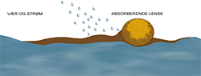

ABSORBENT
Absorbenter produseres med forskjellig egenskaper. Fra bark og strøprodukter til absorbenter av kunstfiber. Alle med unike egenskaper, og forskjellige bruksområder. I forbindelse med akuttutslipp av olje er det oljeabsorbenter som benyttes, og til en viss grad universalabsorbenter.
Forskjellen på oljeabsorbenter og universalabsorbenter er kort fortalt at oljeabsorbenter ikke trekker til seg vann mens universalabsorbenter absorberer både olje, vann og kjemikalier.
Oljeabsorbentene er ideelle for opptak av mindre utslipp av olje og oljebaserte væsker, og til avslutning av større oljeutslipp, for eksempel i strandsonen.Oljeabsorberende lenser er normalt hurtigvirkende (altså at de mettes hurtig for olje), og har også høy kapasitet. Lensene bør i hovedsak benyttes for kontroll og oppsamling av olje i smult farvann, for eksempel i havnebasseng, beskyttede viker og lignende.
Som et førsteinnsatsvåpen har oljeabsorberende lenser den fordel at de er enklere å håndtere i utsettingsfasen. De er lettere enn vanlig mekaniske lenser, og det kreves følgelig mindre ressurser for å sette de ut.
Oljeabsorberende lenser er også ideelle å benytte som tetting i lekkasjepunkter mellom mekanisk lense og kai, fartøy, lensefeste på land, etc.
Kriterier for valg av absorbenter
Absorberingskapasitet:
- En effektiv absorbent må være tilpasset oppgaven, det vil for eksempel være lite effektivt å benytte en lett absorbent i pulverform i mye vind da absorbenten vil komme til å spre seg over et stort område. På samme måte er det dårlig økonomi å benytte en absorberende lense som kan absorbere 400liter på et oljesøl på 10liter.
Husk derfor:
Benytt alltid absorbenter i fast form på sjø slik som lenser, ark eller puter
Absorbenten bør ha høy opptakskapasitet ved bruk i vann, minimum 25 ganger egen vekt.

Virkningen til absorbenter på vann avhenger av oljens viskositet, vær og strømforhold.

Er det antydning til strøm eller vind bør en benytte absorberende lenser med kjørt eller sammen med vanlige lenser.
Lette oljer absorberes hurtig.
Tyngre oljer absorberes sent og det kan være vanskelig å få absorbenten mettet da oljen vil ha problemer med å trenge inn til kjernen av lensen.
Ved bruk i tyngre oljer bør en derfor velge absorberende lenser med mindre diameter.
Deponering av oljeholdige absorbenter
Alle brukte absorbenter som har vært i kontakt med olje er å anse som spesialavfall og skal deponeres på forsvarlig måte.Andre tolkninger av dette må avklares med Klif eller Kystverkets Beredskapsavdeling.
Å kvitte seg med oljeholdige absorbenter er kostbart og det er derfor viktig at en velger absorbenter som selv etter lang tids bruk inneholder lite vann.
Vaske/rengjøringsmidler må aldri benyttes sammen med eller i nærheten av absorbenter!Absorbenten vil da trekke vann og bli ødelagt.